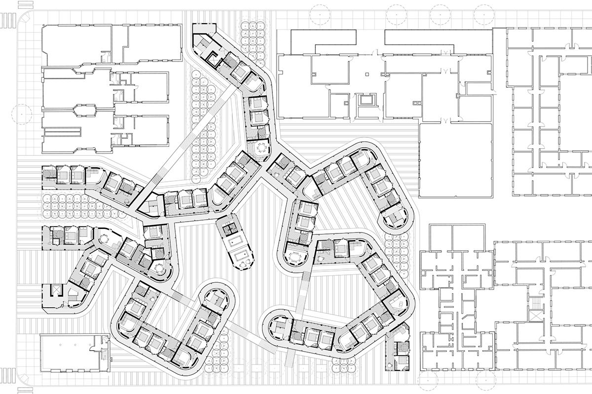
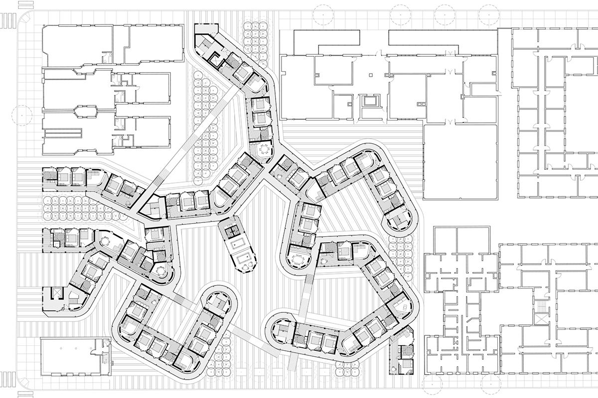
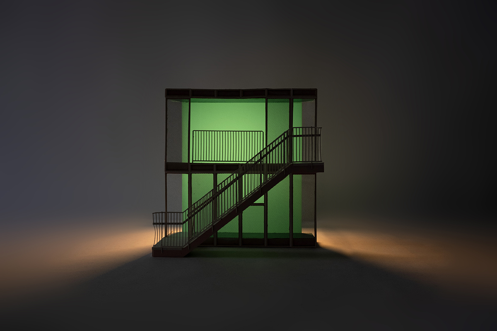
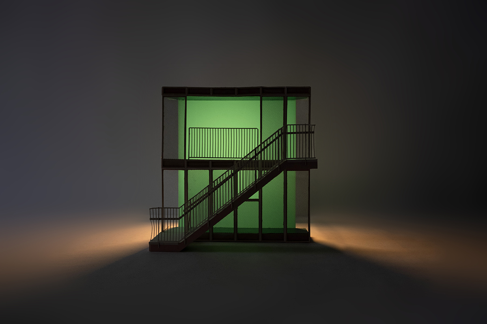

The portfolio of works from my Master of Architecture is guided by my studies and experiences in two distinct disciplines, architecture and landscape architecture. In practice, landscapes are researched and designed through unique methods from buildings, guided by a separate set of design technologies: the regional transect, the grading plan, the planting schedule. In the enclosed works, I apply the operative methods and technologies of landscape to the practice of researching and making architecture.
Emergent from these technologies, landscape architectural practice conditions a separate sensibility from making buildings, with alternative priorities and values. This conceptual framework emphasizes ecosystemic transformation, surface articulation, and practices of multi-species care. Landscape is ground without figure, narrative without climax, mise-en-scène, insects in the night air. It is an outsider’s discipline, a minority language in the built environment. It suggests an alternative design approach to architecture, urbanism, and infrastructure.
 


 
